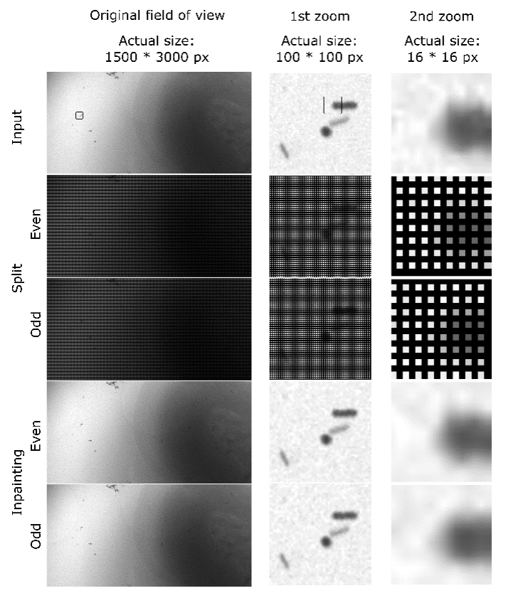

Checkers manual
Version 0.2
Written by Genevieve Buckley and Sylvain Trépout.
Table of Contents
- About Checkers
- Short introduction
- Figure 1
- Using Checkers
- Prerequisites
- Bash script: setting the variables
- Bash script: actual computation
- References
About Checkers
Short introduction
Checkers is a software that performs denoising of cryo-scanning transmission electron tomography (cryo-STET) datasets. Denoising is performed using the noise2noise strategy^1^ implemented in cryo-CARE^2^. This strategy uses a pair of images/volumes representing the same object of interest, provided the noise in both images/volumes is different. In conventional cryo-electron tomography, the image/volume pair is generated using the odd and even frames of the movies collected using a direct electron detector. Cryo-STET datasets do not contain odd and even frames, they only consist of a single collected frame, thus the image/volume pair must be generated post-acquisition. To generate such a pair of images/volumes in cryo-STET, we have developed a new strategy combining the software IMOD^3,4^, Tomo3D^5--7^ and MATLAB. In MATLAB, the image pixels are split in two, i.e. the pixels with even coordinates are separated from the pixels with odd coordinates. This generates two different images where only some pixels contain information. To rebuild the information in the blank pixels, we use a robust inpainting algorithm^8,9^ as used in previous studies^10,11^. The pixel splitting and inpainting computing steps are described in Figure 1.
Checkers currently runs in a bash script that executes all the steps, calling the different software one after the other. We want to provide the same workflow in a single Python or Jupyter Notebook script but we do not know yet when this will be available.
Checkers was developed under Linux (CentOS Linux, Release 7 Kernel 3.10.0) on the Massive cluster (https://massive.org.au). Some of the commands executed in Checkers are specific to Massive, however, if you are not part of Massive you are still able to run Checkers. No development of Windows or Mac version of Checkers is planned.
Figure 1
{width="3.2in" height="3.7784722222222222in"} Figure 1. Evolution of the image content during the splitting and inpainting steps of Checkers. First row: A large field of view and a two-stage zoomed area focusing on gold beads are included to better appreciate the image content after each computing step. The input is a conventional image extracted from an aligned cryo-STET tilt-series. Second and third rows: After splitting the pixels, two images are created, a first one composed of even coordinate pixels only and a second one only containing the odd coordinate pixels. In the large field of view, the odd and even images appear dark because of the presence of black pixels (i.e., the ones that were not copied). The moiré pattern is an optical illusion as can be observed in the zoom images, the intensity of the remaining pixels is the same (actually strictly the same) as that of the original ones. Fourth and fifth rows: The inpainting step reconstructs the missing pixels, generating two images that on the large field of view cannot be distinguished from the original image, but at the highest zoom, differences can be observed. Extra information: Note that at the splitting step, only half of the pixels are used as only pixels with coordinates (x-y) 1-1, 2-2, 1-3, 2-4, 1-5, 2-6, and so on, are kept. The reason for keeping only half of the pixels is that this strategy produced higher-quality denoised reconstructions. This has not been investigated further, but it could be that adjacent pixels do not satisfy the noise independence requirements because they share a certain amount of noise due to the scanning of the electron beam (two adjacent pixels are collected sequentially). Pixels diagonally adjacent are not collected sequentially and they generate better denoised volumes.
Using Checkers
Prerequisites
To run Checkers, several software must be pre-installed. We do not give any guidelines on how to install them as this is very platform-specific. These software are well-known and broadly used, you will find all the necessary information online. On our cluster, Checkers runs smoothly using this combination of software:
- Anaconda (Python 3.8 and gcc8)
- Cuda 10.1
- Cudnn 7.6.5 for Cuda 10.1
- Imod 4.11.15
- Matlab 2019
- A cryoCARE environment installed in miniconda (we followed the manual installation described in here: https://github.com/juglab/cryoCARE_T2T
To run the MATLAB commands, you need to have some of the scripts we use, and these files must be present inside the computing directory (or in your MATLAB path):
- The collection of scripts to read/write MRC files, in particular
ReadMRC.mandWriteMRC.m, available here: https://au.mathworks.com/matlabcentral/fileexchange/27021-imagic-mrc-dm-and-star-file-i-o - The inpaintn.m script to inpaint sparse images, available here: https://au.mathworks.com/matlabcentral/fileexchange/27994-inpaint-over-missing-data-in-1-d-2-d-3-d-nd-arrays
- The file
splitPixels.mis available in theScriptsfolder of the GitHub Checkers page.
The main file, Checkers.sh, can be placed anywhere in your computer. The idea behind that is that if you work on different projects requiring different parameters, then you can have a Checkers.sh file per project, allowing you to keep track of what you did.
Bash script: setting the variables
At the top of the Checkers bash script, you will find several module load
commands. These commands are Massive-specific and are useful
only to people having access to the Massive data processing engine
https://massive.org.au.
If you are using a desktop computer, you
can simply delete these lines or comment them using a # in front of
the line.
Before running Checkers, you must set up a few variables that correspond to:
- Computing directory path
- Data directory path
- Tomo3D path
- Thickness of the reconstruction
- X/Y dimension of the tilt-series (only one value, we assume square images)
We chose to have a computing directory AND a data directory because in our workflow the directory where the data is stored has either limited capacity, a slower connection, or both. By copying the data to the computing directory, we avoid writing the intermediate computed steps to the data directory and we run the computation on a disk with faster disk access.
If your configuration or liking is to run the computation in the same folder as where your data is located, then just enter the same path for the computing and data directories.
The tomo3dpath is simply the path of Tomo3D bin folder on your computer. We use Tomo3D for computing the 3D reconstructions. However, if you prefer using IMOD for reconstructing your tomograms, please do it.
The thickness variable represents how thick the reconstruction will be in pixels. You should know more or less the value here.
Bash script: actual computation
Checkers can process several tilt-series sequentially. This is performed
using a for loop that goes through the different tilt-series, checking
if the data actually exists, skipping non-existent data which is useful
when there are gaps in the tilt-series list. Our dataset always contains
a few tens of tilt-series, so by default we number the tilt-series using
3 digits. However, if you have more than a thousand tilt-series, it is
possible to use 4 digits, as indicated in the script.
At the beginning of the script, the user is asked to define the
coordinates of the region of interest for each tilt-series. There are at
least a couple of reasons why you should do that. First, in terms of
computing time, you do not want to perform the whole cryoCARE denoising
on the entire volume, especially if the sample does not fill it (which
is rarely the case). Using large volumes might cause out-of-memory
issues in cryoCARE and you might have to pick a greater number of volume
coordinates to more accurately train your model, which will
significantly increase the computation time. The second reason is that
in cryo-STET there are often large differences between the min and max
pixel values, because thick samples (e.g. entire bacteria) are observed
on a thin background (carbon support film). At the background level, the
intense beam experiences almost no scattering, hence all electrons are
collected on the STEM BF detector, generating a high-intensity pixel. At
the sample level, the scattering is important (especially at high tilt
angles), generating a low-intensity pixel. During the testing of
Checkers, we noticed that denoising works better on smaller 3D
reconstructions where the values of high-intensity and low-intensity
pixels are contained. Checkers uses an aligned tilt-series to generate
the denoised 3D reconstruction, then, you can relatively easily compute
a 3D reconstruction for each tilt-series and identify the 6 coordinates
(xStart, xStop, yStart, yStop, zStart, zStop) that define your area of
interest. Checkers will automatically compute the values that must be
given to the newstack command.
The TS and TF variables represent the names of the aligned
tilt-series and tilt-angles, respectively. In Checkers, there is no
assumption on what the extension of your files should be, this is why
you need to provide the full filenames (except for the loop number). The
tilt-series must be already aligned, and it can have any file extension
(.ali, .st, .mrc, .thisishowiliketonamemyfiles, etc.) as long as
it is a file in the MRC format. The same goes for the tilt-angle file,
it just needs to be a single-column text file containing as many rows as
images contained in the tilt-series file, this convention is used by
many reconstruction algorithms (e.g. IMOD, Tomo3D). The convention we
use in the Checkers.sh file on GitHub is .ali and .rawtlt for the
aligned tilt-series and the tilt file, respectively; however, you can
change it to match your naming convention.
Checkers automatically copies the data from the data directory to
the computing directory. At the end of the script, it will also move
the final results to your data directory. A sub-folder TS_001 is
also created and all intermediate steps will be written inside it, and
eventually deleted.
For better referencing the different computing steps performed in
Checkers, we have numbered them from 01 to 10 in the
Checkers.sh bash script. You might have to change some of the
commands if you want to do things slightly differently than us, and we
will let you know where to make those changes using the command
numbers. Note that these numbers do not correspond to the step numbers
described in the original publication of Checkers.
Commands
- Command 01
- Commands 02a and 02b
- Commands 03a and 03b
- Commands 04a and 04b
- Command 05
- Command 06
- Command 07
- Command 08
- Command 09
- Command 10
Command 01
This command starts the splitPixels.m MATLAB script (no GUI displayed) which takes the input data and splits it into two halved datasets. To be able to run this script, the MATLAB file splitPixels.m must be in your computing directory, otherwise, MATLAB won't find it. As previously mentioned, ReadMRC.m, WriteMRC.m, inpaintn.m, etc. must also be in your computing directory. You can also put them in your MATLAB path, and to load your path you must use the addpath(genpath(path)) command that is at the top of the splitPixels.m script. By default, the path loading is disabled, but a MATLAB experienced user might prefer having the path loaded instead of needing to have the MATLAB scripts in the computing directory. You have two options, choose the one you prefer. The command 01 also outputs a log file (matlab_output_splitPixels.txt) which will contain useful information if the command fails. The command 01 outputs two tilt-series named TS_001a_DTC.mrc and TS_001b_DTC.mrc, which will be used in the following part of the Checkers script.
Commands 02a and 02b
The volumes corresponding to the two inpainted tilt-series are reconstructed with Tomo3D. The output is a volume with the XZ plane facing us. At this step, if you want to use IMOD instead, just change the commands accordingly. You will need to replace the commands 02a and 02b with something like "tilt -input -output -TILTFILE -THICKNESS etc."
Commands 03a and 03b
Since the output of the previous command is a rotated volume, we need to rotate it in the right orientation so we can explore the data more easily. Trimvol is an IMOD command, and the -rx option rotates the volume around the X axis, so we have a volume with the XY plane facing us.
Commands 04a and 04b
The newstack command from IMOD is used to crop the volumes according to the ROI coordinates defined above in the script. The -secs option lets you choose what slices of the volume you want to keep. With the -size option, you set X and Y sizes of the output reconstruction. And with the -offset option, you set the centre of the output reconstruction (0,0 means that the input and output reconstructions will share the same centre). All of this is already taken care of by Checkers. If you do not want to crop your reconstruction, just comment the newstack commands 04a and 04b with a #, it will still work.
Command 05
Delete temporary files.
Command 06
This command is to load the cryocare conda environment. The first line (source /my/path/to/...) consists of loading miniconda. The second line (module load cryocare) is loading the cryoCARE environment. You will need to input the right path.
Command 07
This is the 1^st^ cryoCARE command which generates the data for further training of the model. Here we use the following parameters (as in train_data_config.json from cryoCARE_pip):
- Number of train volumes = 1200
- Number of validation volumes = 120
- Volume dimensions = 72,72,72
These parameters were not particularly optimised. Feel free to change them if they do not suit you or if you think you can achieve better denoising.
Command 08
This is the 2^nd^ cryoCARE command which trains the neural network model. We use the following parameters (as in train_config.json from cryoCARE_pip):
- Train loss = mse
- Number of training epochs = 100
- Number of training steps per epoch = 200
- U-net depth = 3
- U-net first layer size = 16
- Learning rate = 4. 10^-4^
Again, these parameters were not particularly optimised. Feel free to change them if they do not suit you or if you think you can achieve better denoising.
Command 09
This is the 3^rd^ and last cryoCARE command which applies the trained model to the data.
Command 10
The final data, including the denoised tomogram, the
cryoCARE config.json file, the computed model weights and the Matlab log
are moved to the data directory.
References
-
Lehtinen, J. et al. Noise2Noise: Learning Image Restoration without Clean Data. in Proceedings of the 35th International Conference on Machine Learning 2965--2974 (PMLR, 2018).
-
Buchholz, T.-O., Jordan, M., Pigino, G. & Jug, F. Cryo-CARE: Content-Aware Image Restoration for Cryo-Transmission Electron Microscopy Data. 5.
-
Kremer, J. R., Mastronarde, D. N. & McIntosh, J. R. Computer visualization of three-dimensional image data using IMOD. J Struct Biol 116, 71--76 (1996).
-
Mastronarde, D. N. & Held, S. R. Automated tilt series alignment and tomographic reconstruction in IMOD. J Struct Biol 197, 102--113 (2017).
-
Agulleiro, J. I. & Fernandez, J. J. Fast tomographic reconstruction on multicore computers. Bioinformatics 27, 582--583 (2011).
-
Agulleiro, J.-I. & Fernandez, J.-J. Tomo3D 2.0 -- Exploitation of Advanced Vector eXtensions (AVX) for 3D reconstruction. Journal of Structural Biology 189, 147--152 (2015).
-
Fernandez, J.-J., Li, S., Bharat, T. A. M. & Agard, D. A. Cryo-tomography tilt-series alignment with consideration of the beam-induced sample motion. Journal of Structural Biology 202, 200--209 (2018).
-
Garcia, D. Robust smoothing of gridded data in one and higher dimensions with missing values. Comput Stat Data Anal 54, 1167--1178 (2010).
-
Wang, G., Garcia, D., Liu, Y., de Jeu, R. & Johannes Dolman, A. A three-dimensional gap filling method for large geophysical datasets: Application to global satellite soil moisture observations. Environmental Modelling & Software 30, 139--142 (2012).
-
Trépout, S. Tomographic Collection of Block-Based Sparse STEM Images: Practical Implementation and Impact on the Quality of the 3D Reconstructed Volume. Materials 12, 2281 (2019).
-
Cossa, A., Arluison, V. & Trépout, S. Sparse cryo-STEM tomography for biological samples. Microsc Microanal 27, 3028--3030 (2021).